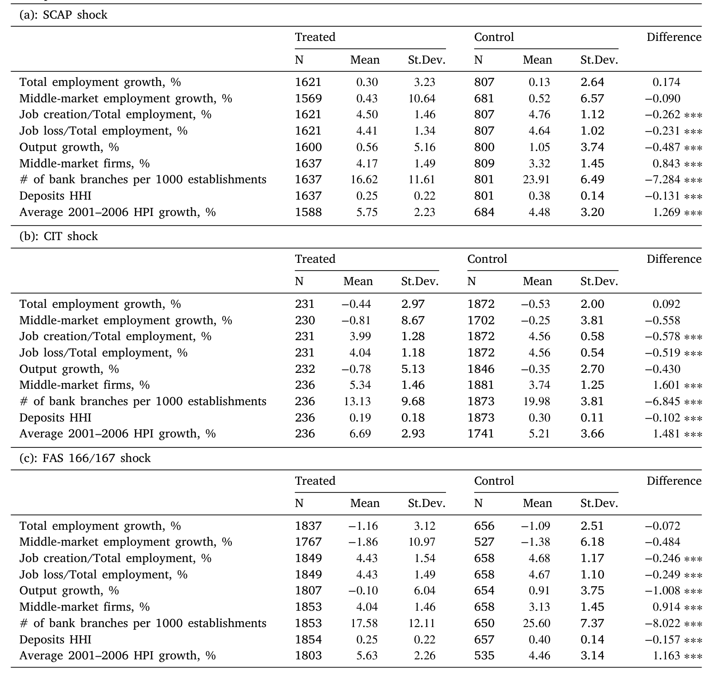
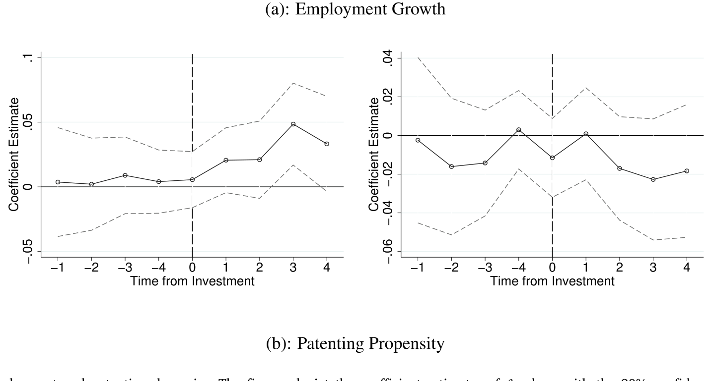
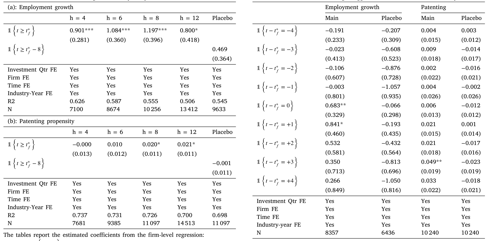
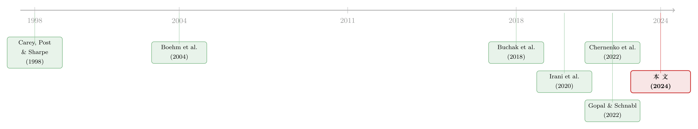

银行撤退之后，是谁悄悄接住了那批「借不到钱」的公司？
本文读的是 Davydiuk, Marchuk & Rosen (2024, Journal of Financial Economics)：作者用手工搜集的「商业发展公司」(business development company, BDC) 投资数据库，借助三次外生的信贷供给冲击证明——当传统银行在金融危机后收紧对中型企业的放贷时，BDC 的资本恰恰流进了那些「缺钱」的县，充当了银行融资的替代品；而且这笔钱不是空转，它实实在在地推高了受资助企业的就业增长（每年 0.8%–1.2%）与专利产出（每季度多 2%）。
1 一个被忽略的角色
先讲一个我们都熟悉的故事。2007–2008 金融危机之后，监管收紧、银行去杠杆、信贷收缩——这几乎是过去十几年公司金融文献里被反复讲述的母题。风险高的、规模小的企业首当其冲，它们本来就在银行的「合格借款人」名单边缘，危机一来，门就关上了。
接着，一个自然的问题是：这些被关在门外的公司，后来怎么样了？ 它们要么萎缩、要么倒闭——这是一种答案；但还有另一种可能，是有人在银行退场的地方，悄悄搭起了一张新的融资网。
过去十年，文献大体回答了这张网的一部分。在住房按揭市场，Buchak et al. (2018) 和后来者发现影子银行、尤其是金融科技 (FinTech) 放贷者大举接管了银行让出的份额（关于金融科技如何挤进信贷市场，可参见《监督做得更差，却照样抢走你的客户》）。在小企业贷款市场，Gopal & Schnabl (2022) 记录了金融公司和 FinTech 如何抵消了银行的信贷收缩。
但这里始终有一个盲区：中型企业（middle-market firms，年收入大致在 $10 百万到 $1 十亿之间的私人公司）。它们既不是上市大公司，能去公开债券市场；也不是街角的小店，进得了小企业贷款的统计口径。它们卡在中间，借不到、也很少被看见。
而这篇论文要讲的，正是接住这批公司的那个角色——商业发展公司 (BDC)。
BDC 是一类特殊的封闭式投资公司，1980 年的《小企业投资激励法案》创设了它，目的就是把资本引向中小私人企业。它像银行一样发放定期贷款和授信额度，又像私募股权基金一样提供股权融资和经营管理协助 (managerial assistance)。代价是：它对债务证券要收取比银行贷款高 4%–5% 的溢价 (Chernenko et al., 2022)，换来的是灵活、定制、快速放款和宽松的契约条款。
到 2017 年底，BDC 行业的总资产已逼近 $100 十亿，过去二十年年均增速接近 35%，规模可与成熟的风险投资 (VC) 行业相提并论。可就是这么一个体量的玩家，学界几乎没人系统研究过——原因也简单：私募债空间披露极少，数据难找。
2 一套从 10-K、10-Q 里一行一行抄出来的数据
所以这篇论文的第一项贡献，其实是苦功夫。
公开注册的 BDC 必须在 10-Q、10-K 的「投资清单表」(schedule of investments, SOI) 里逐笔披露自己的投资。作者把这些表一行一行手工抄了下来：覆盖 2001:Q1 到 2017:Q4，包含 69 家 BDC、约 10,000 家被投企业、超过 20,000 笔单独的债务投资。每一笔都记下了债务类型、交易规模、行业、利率、到期日。
但真正关键的一步在于地理定位。要研究「银行在哪里退场、BDC 又在哪里补位」，你得知道每家被投企业到底在哪个县。作者从 BDC 发行新证券时提交的 Form N-2 注册声明里，挖出了被投企业的确切地址，为 7500 多家公司手工补齐了城市、州、邮编，还人工追踪了公司更名、并购。在几乎每个季度，他们都能覆盖 80% 以上的被投企业（若按投资公允价值加权则达 90%）。
这种颗粒度，在以「披露稀少」著称的私募债领域，是独一份的。有了它，下面的识别才成为可能。
3 识别策略：三次「银行被迫撤退」的自然实验
现在到了全文最吃功夫的地方。
要证明「BDC 资本是银行融资的替代品」，最大的障碍是内生性。BDC 涌入某个县，到底是因为银行退了、留下了缺口？还是因为那个县本来就前景好、大家一起涌进去？相关不等于因果。
作者的解法是去找外生的、只打击传统贷款人的冲击，看 BDC 是否随后填了进来。他们一口气用了三个：
- SCAP 冲击：2009 年首次对银行控股公司实施的监管压力测试 (Supervisory Capital Assessment Program)。被测银行被迫充实资本、转向「质量飞行」(flight-to-quality)，从而削减了对中型企业这类高风险借款人的信贷。
- CIT 冲击：2009 年最大的金融公司之一 CIT Group 的崩溃。由于债务市场存在借款人分层——金融公司服务的客户比银行更高风险 (Carey et al., 1998)——CIT 的倒下本身就是一次中型市场的信贷供给紧缩。
- FAS 166/167 冲击：会计准则变化，要求银行控股公司将可变利益实体 (variable interest entities, VIE) 并表，迫使银行重新充实资本、收缩放贷。
三个冲击，机制各异，但指向同一件事：某些县的传统贷款人被外生地削弱了。作者据此在双重差分 (difference-in-differences, DiD) 框架里定义：处理组 (treated) 是那些有「受冲击贷款人」存在的县，控制组 (control) 则没有。
这里识别的灵魂，是处理组与控制组在冲击前不应有系统性差异。作者用两类证据来撑这一点。其一，是两组县在冲击前的特征对比——

Table 2: reports the counties’ characteristics across the two groups
如表 2 所示，处理组和控制组的县在被冲击之前，人口、就业、企业数量等观测特征大体可比，这让「平行趋势」的假设更可信。其二，作者明确检验了冲击前 BDC 的进入与投资金额在两组之间没有显著差异——也就是说，是冲击之后，两条线才分了岔。
4 反转：缺钱的地方，BDC 来了
铺垫到这里，结果反而干净利落。
在 DiD 设定下，冲击之后，处理组的县（也就是传统融资被削弱的县）BDC 的存在度比控制组高出 2%–6%。换算成钱，BDC 平均向一个处理组县多投放了 $5.3–$41.4 百万的债务资本。
这正好对上了 BDC 投资经理们自己的说法——他们总爱说自己专门瞄准中型企业，因为这些企业「服务不足」(underserved)。数据说，他们没在吹牛。
然后，一个加分项出现了：作者把同样的 DiD 套在 Preqin 的私募债 (private debt, PD) 基金数据上，发现了相似的模式——处理组的县 PD 基金存在度比控制组高出 5%–19%。这一点很重要：它说明透过 BDC 这扇能看见的窗，我们可以窥见整个不透明私募债空间的行为逻辑。
更有意思的是「替代里的替代」。在受冲击的县里，BDC 更倾向于进入那些主要由全国性银行机构服务的地方——因为在那儿，它们面对的本地银行竞争更小。资本不是盲目地填缝，它专挑那些缺口最大、竞争最弱的缝去填。
那么，BDC 偏爱什么样的企业？答案和 VC 很像：高成长、爱创新的公司。在一个三重差分 (triple difference) 设定里，冲击之后，在受影响的县中，BDC 向一个高科技县比向一个非高科技县平均多投放 $8.7–$48.4 百万债务资本；对高研发密度县相对低研发密度县的对应估计是 $8.2–$49.9 百万。私募债的钱，正流向最可能孕育创新的地方。
5 但这笔钱，到底有没有用？
到这里，故事还只讲了一半。证明了「BDC 是替代品」，但替代品的质量如何？银行的钱和 BDC 的钱，对一家公司来说是不是等价的?
这是全文真正想回答的问题，也是它从「金融中介研究」跨入「真实效应研究」的一步。
作者把镜头拉到企业层面。在一个事件研究 (event study) 里，他们发现：拿到 BDC 债务投资后，企业的年就业增长比投资前时期高出 0.8%–1.2%。这个结果在更稳健的交错 DiD 设计 (staggered DiD, Borusyak et al., 2024) 里依然成立——把「已获 BDC 投资」的企业和「尚未获得」的企业相比，前者就业增长更快。
而平行趋势——还是那条识别的命门——在这里也被仔细检验了：

Figure 8: Parallel trends for employment and patenting dynamics. The figures depict the coefficient estimates of 𝛽s along with the 90% confidence inte
如图 8 所示，无论是就业还是专利，投资发生之前的系数都不显著、贴着零线，效应只在投资发生之后才浮现。这正是事件研究最想看到的形状：处理前两组没有分岔，处理后才分。
专利那一头同样有戏：拿到 BDC 资助后，企业每季度多申请 2% 的专利，相当于在平均专利频率上增加约 10%。私募债不只养活了就业，还喂养了创新。
最关键的因果检验，作者再次搬出了那三个信贷供给冲击。逻辑是这样的：如果 BDC 的钱真是银行的替代品，那么在银行融资短缺程度低的县，BDC 资助的企业冲击后就业增长应高出 0.9%；而在高暴露于冲击的县，企业就业增长则比低暴露县低 1.1%。把这两个估计加起来——
两个系数相加约等于零，含义是：BDC 资助的企业，恰好用 BDC 的资本补上了从传统贷款人那里失去的融资。不多不少，刚好替代。这正是「替代品」一词最精确的实证刻画。

Table 7: reports the estimation results of regression (5). As shown
表 7 报告了这组基于冲击的回归估计，把上面这个「失之东隅、收之桑榆」的算术钉实在系数上。
6 不只是钱：BDC 还带来了「人」
如果故事到此为止，BDC 也不过是个「换了马甲的银行」。但论文埋了最后一个伏笔，也是它和 VC 文献真正接轨的地方。
回想 BDC 的法定义务——它被监管要求向被投企业提供实质性的经营管理协助。这不是银行会做的事。作者发现：从贷款人那里获得更多管理协助的企业，BDC 投资后的就业增长更高。
换句话说，BDC 对企业成长的贡献，是「资本 + 人力」的双重注入。它一头像银行（放贷、持有贷款），一头像私募股权（出谋划策、深度介入）。在中型市场这片银行不愿深耕、VC 又够不着的真空地带，这种混合体恰好补上了位置。
这就是全文反复围绕的那一个核心：BDC 不是金融体系里一个可有可无的注脚，而是危机后中型企业融资的实质性接盘人——既补上了信贷的缺口，又通过管理协助把这笔钱「用活」，最终落到了就业与创新这些真实经济变量上。
7 文献脉络
把这条线捋一捋，能看清这篇论文站在哪里。
最早的根，在 Carey, Post & Sharpe (1998)——他们就指出银行与金融公司在私募债契约上存在专业化分工，金融公司服务更高风险的借款人。这恰恰是本文把 CIT 崩溃当作中型市场冲击的理论前提。Boehm et al. (2004) 则从法律层面厘清了 BDC 这种投资工具的制度细节，是后续所有 BDC 研究绕不开的背景文献。

危机之后，研究主线转向「银行退、谁来补」。Buchak et al. (2018) 在按揭市场记录了影子银行与 FinTech 的崛起；Gopal & Schnabl (2022) 在小企业贷款市场证明金融公司与 FinTech 抵消了银行的信贷收缩；Irani et al. (2020) 则强调了非银机构在银团贷款市场作为「最终持有人」的角色。而 Chernenko, Erel & Prilmeier (2022) 最贴近本文——他们研究上市中型企业的非银贷款条款，但由于资格限制，BDC 在他们样本里只是很小一块。Loumioti (2022) 把直接放贷的兴起与银行业监管变化联系起来。
本文的位置因此清晰：它是第一篇系统研究 BDC 这类直接贷款人的论文，用独一无二的手工数据，第一次为「信贷供给收缩 → 非银资本进入与成长」建立了因果证据，并把分析从「中介行为」推进到「真实经济效应」。它和同一作者群的 Davydiuk, Marchuk & Rosen (2023, RFS) 关于直接放贷市场纪律的研究构成姊妹篇。
（这条「利率与监管如何喂大非银」的大主线，也可对照《利率长跌二十年，如何亲手喂大了影子银行》；而「一种资本替代另一种资本」的识别思路，与《一块钱的担保，换走了多少自己的风险？》中的信贷替代逻辑遥相呼应。）
8 评论与延伸（Q&A + 研究方向）
(a) 几个可能的疑问
Q：处理组「有受冲击贷款人存在」就算被处理，但 BDC 的进入会不会本来就和这些县的某些不可观测前景相关？
这正是识别的核心担忧。作者的防线有两道：一是三个冲击机制各不相同（压力测试、金融公司倒闭、会计并表），却给出一致结论，单一遗漏变量很难同时解释三者；二是明确检验了冲击前 BDC 进入与投资额在两组无显著差异（图 8 的事前系数也贴零）。但「冲击暴露」终究不是随机分配，平行趋势是假设而非证明，残余的选择性偏误无法完全排除。
Q：BDC 和私募股权 (PE)、风险投资 (VC) 到底差在哪？
关键差别在工具和阶段。VC/PE 主要做股权、瞄准早期或成长期企业；BDC 以债务为主（虽也配股权），服务的是已有营收、规模在
$10百万–$1十亿的成熟中型私人企业。三者共有的一点是都提供管理协助——这也是本文强调 BDC「混合体」属性的原因。
Q：就业增长 0.8%–1.2% 听起来不大，值得当成「重要真实效应」吗？
量级要放在对照里看。文献中 Brown & Earle (2017)、Greenstone et al. (2020) 对 SBA 担保贷款的真实效应估计往往「很小甚至可忽略」；相比之下本文找到了正向且稳健的效应。更有说服力的是基于冲击的检验——两个系数相加约等于零，刻画出「精确替代」，这比单纯一个正系数信息量更大。
Q：用 BDC 数据去推断整个私募债空间，会不会以偏概全？
作者对此是谨慎的。他们专门用 Preqin 的 PD 基金数据重做了 DiD（处理组高
5%–19%），发现模式相似，以此论证 BDC 是观察不透明私募债的一扇可信的窗。但他们也坦承，要评估非银融资对整个中型市场的总体贡献，还需把金融公司、FinTech、中型市场 CLO 一并纳入——这超出了本文范围。
Q：FAS 166/167 这种会计准则冲击，凭什么算「外生」于中型企业的信贷需求？
因为它打击的是银行的资本约束（被迫并表 VIE、补充资本），其触发与某个县中型企业的经营前景无关，传导路径是「银行资本紧张 → 收缩高风险放贷」。这种「供给侧外生、需求侧无关」正是把它当作工具的合法性来源；CIT 崩溃和 SCAP 同理。
Q：BDC 收 4%–5% 的溢价，企业为什么还愿意借？
因为对这些「服务不足」的企业来说，替代选项往往是借不到，而非「以更低利率借到」。BDC 提供的是灵活、定制、快速放款、宽松契约，外加管理协助。溢价是这套服务和「可得性」本身的价格。
(b) 几个可能的研究问题与提案
1. BDC 资本进入对当地公司债/信用利差的外溢
【经济故事】BDC 主要服务私人中型企业，但同县的可比上市公司在公开债券市场的融资成本，会不会因为「本地有了新的边际贷款人」而改变？非银资本的进入是否压低了整个县的信用风险溢价？ 【可行性】中。需把本文的县级 BDC 进入数据与 TRACE 公司债二级市场利差、Mergent FISD 发行数据匹配；识别可沿用本文的三冲击 DiD。难点在中型市场的私人企业大多没有公开债，外溢对象的样本可能偏薄。
2. 外资持有人与 BDC 资本的互补还是挤出
【经济故事】近年外资机构对美国私募债与中型企业债务的配置上升。当 BDC 在某地填补银行缺口时，外资资本是跟随进入（互补）还是回避（挤出）？这关系到危机中跨境资本对本地实体的稳定作用。 【可行性】中偏低。需要 BDC 投资者结构（本文已用 13F）与跨境私募债配置数据（Preqin LP 层面、或基金注册地）。外资在私募债的披露极弱，识别外资「针对某县」的配置非常困难，更现实的是做基金层面的相关性而非县级因果。
3. BDC 退出/违约时的「负向真实效应」
【经济故事】本文讲的是 BDC 进入带来的就业与创新。但反过来：当 BDC 自身遭遇资金压力（如 2008、2020）被迫收缩或抛售头寸时，被投企业是否经历对称的就业下滑？非银资本的「顺周期性」对中型市场是放大器吗？ 【可行性】高。本文数据库（季度、企业层面、含投资退出）天然支持把「BDC 减持/退出」当作事件，配 BLS 就业与 USPTO 专利做事件研究；2020 疫情冲击提供了一个干净的外生时点。
4. 管理协助的「剂量—反应」机制拆解
【经济故事】本文发现「获得更多管理协助 → 就业增长更高」，但「管理协助」仍是个黑箱。它究竟通过董事会席位、还是再融资便利、还是行业网络发挥作用？把这个渠道拆开，能区分 BDC 到底更像银行还是更像 PE。 【可行性】中。需从 SOI 与 N-2 文本中提取 BDC 是否持有股权、是否取得董事席位等代理变量（可用文本挖掘/LLM 解析披露文件），再做异质性回归。识别偏弱，更适合定性刻画机制而非主张因果。
9 我的判断
这篇论文最扎实的贡献，是把一个体量已达 $100 十亿、却几乎无人系统研究的金融角色，第一次搬到了可被计量的台面上。手工搜集的地理颗粒度数据是真正的护城河——没有它，后面所有的县级 DiD 和三重差分都无从谈起。而「三个机制迥异的冲击给出一致结论」这一设计，比单一自然实验更能抵御「故事性识别」的质疑；最让我欣赏的，是基于冲击的就业回归里「两系数相加约等于零」那个细节——它把抽象的「替代」一词，落成了一个可以验证的、近乎严丝合缝的算术等式。
我对识别的担忧主要有两点。其一，处理组的界定（「有受冲击贷款人存在」）本质上仍是基于事前的银行布局，而银行选择在哪里布点本身可能与地方长期前景相关，平行趋势检验缓解但不能根除这层选择性。其二，企业层面的就业与专利效应依赖 Preqin 的企业匹配与 USPTO 数据，样本是「被 BDC 选中」的企业，外推到「假如随机一家中型企业获得 BDC 融资」时需谨慎——BDC 偏爱高成长、高科技企业本身就是论文的发现之一。
后续我最想看到的，是把镜头转向下行风险：当 BDC 自己被资金链卡住、被迫减持时，这套「资本 + 管理协助」的正向效应是否对称地反转。如果非银资本在繁荣期是中型市场的成长引擎，那它在收缩期会不会也是同一批企业的「加速器」？这关系到一个更大的政策判断——一个年均增长 35%、却游离在严格监管之外的私募债部门，对实体经济到底是缓冲垫，还是放大器。
参考文献
Borusyak, K., Jaravel, X., Spiess, J. (2024). Revisiting event study designs: Robust and efficient estimation. Review of Economic Studies.
Boehm, S.B., Krus, C.M., Pangas, H.S., Morgan, L.A. (2004). Shedding new light on business development companies. Investment Lawyer 11, 15–23.
Brown, J.D., Earle, J.S. (2017). Finance and growth at the firm level: Evidence from SBA loans. Journal of Finance 72, 1039–1080.
Buchak, G., Matvos, G., Piskorski, T., Seru, A. (2018). Fintech, regulatory arbitrage, and the rise of shadow banks. Journal of Financial Economics 130, 453–483.
Carey, M., Post, M., Sharpe, S.A. (1998). Does corporate lending by banks and finance companies differ? Evidence on specialization in private debt contracting. Journal of Finance 53, 845–878.
Chernenko, S., Erel, I., Prilmeier, R. (2022). Why do firms borrow from nonbanks? Review of Financial Studies 35, 4902–4947.
Davydiuk, T., Marchuk, T., Rosen, S. (2023). Market discipline in the direct lending space. Review of Financial Studies 37, 1190–1264.
Davydiuk, T., Marchuk, T., Rosen, S. (2024). Direct lenders in the U.S. middle market. Journal of Financial Economics 162, 103946.
Gopal, M., Schnabl, P. (2022). The rise of finance companies and FinTech lenders in small business lending. Review of Financial Studies 35, 4859–4901.
Greenstone, M., Mas, A., Nguyen, H.L. (2020). Do credit market shocks affect the real economy? Quasi-experimental evidence from the great recession and "normal" economic times. American Economic Journal: Economic Policy 12, 200–225.
Irani, R.M., Iyer, R., Meisenzahl, R.R., Peydró, J.L. (2020). The rise of shadow banking: Evidence from capital regulation. Review of Financial Studies 34, 2181–2235.
Loumioti, M. (2022). Direct lending: The determinants, characteristics and performance of direct loans. SSRN Electronic Journal.